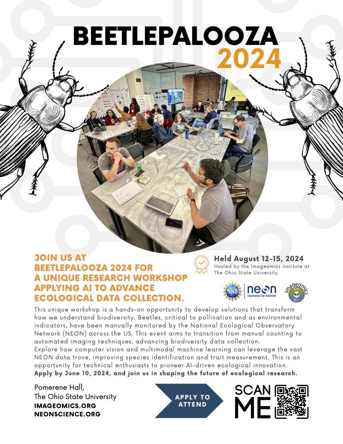

BeetlePalooza 2024: Transforming Ecological Data Collection with AI and Machine Learning
Applications to Attend Close June 10
How can data science and machine learning help with ecological monitoring and conservation, and what are their limitations? To explore this future, the Imageomics Institute in collaboration with The Ohio State University and the US National Science Foundation’s National Ecological Observatory Network (NEON) will host BeetlePalooza 2024 from August 12-15 at Pomerene Hall, in Columbus, OH.
This innovative 3.5-day workshop aims to revolutionize how beetle biodiversity is monitored. Collaboration is key. BeetlePalooza 2024 requires a diverse group of experts including AI/ML researchers, domain scientists, ecologists, taxonomists, and data curators. The focus is on exploring how computer vision and multimodal machine learning could be used to automate and enhance the collection of ecological data, which often relies on manual, time-consuming methods.
Participants will work together, developing a proof of concept demonstrating the potential or limits of AI-driven tools to identify species and extract trait measurements from images of beetle specimens collected by NEON from across the United States. The effort aligns with NEON’s goal of advancing how ecological data are collected and utilized, potentially setting new standards for biodiversity monitoring worldwide.
The BeetlePalooza 2024 organizing team encourages interested parties to apply by June 10, 2024, and help us to spread the word about this groundbreaking event.
For more information or to schedule an interview, please contact Sydne Record at sydne.record@maine.edu, or Eric Sokol at esokol@battelleecology.org
About the Imageomics Institute:
The Imageomics Institute, funded by the US National Science Foundation’s Harnessing the Data Revolution initiative, strives to advance biology through image-based trait discovery and machine learning innovation (https://www.imageomics.org).
About NEON:
The US National Science Foundation’s National Ecological Observatory Network (NEON) is a continental-scale observation facility operated by Batelle and designed to collect long-term open access ecological data to better understand how United States’ ecosystems are changing (https://www.neonscience.org).